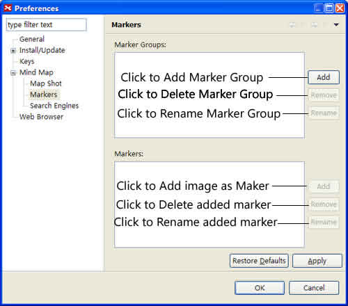
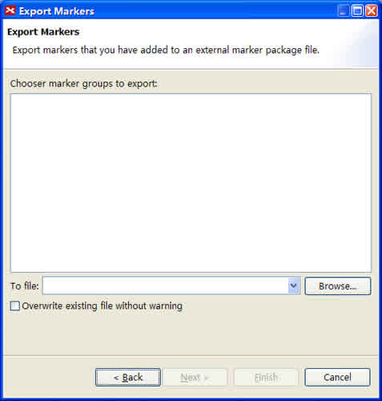

Marker
Markers represent some attributes as image icons, and are widely used in project management, planning, and others. XMind provides a wide array of markers, or allows you to add your own images as markers.You can also import others' marker group file as your own marker, or export your own marker group to others.
You can easily add, delete exited markers, use your own markers, and export your own marker group. Here's how:
To add marker(s):
- Select the topic(s).
- Open the Markers View.
- Click the marker you like.
- This marker will be added into selected topic(s).

To delete existed marker:
- Select the topic.
- Select the marker.
- Choose one way to delete:
- Click the 'Delete' key on keyboard directly.
- Right-click the mouse and select 'delete'.
To use your own markers:
- Open Markers View.
- Click 'Show Marker Manager' icon on view toolbar to open add dialog.
- Click 'Add' beside 'Marker groups' field, and name the new group.
- You can remove, rename, move up, or move down the group added.
- Select the new marker group, click 'Add' beside 'Markers' field.
- Select the image(s) you need, name it, and click 'open' to add into XMind.
- You can remove, rename, move up, or move down the markers added.
- Click 'Apply' to finish this process.
- You can see your own marker group at Markers view.

To import other's markers
- Two manners to Open Marker Package import dialog:
- Open Markers View, and click "Import Marker Group" in the view toolbar.
- Choose "File > Import" in the menu, and select "Marker Package".
- You can import Marker Group file('.xmp') or local images folder.
- Click "Finish".

To Export your own marker group
- Choose "File > Export" in the menu
- Select "Marker Package"
- Select save path, and click "Finish"

Legend
A Legend is a floatable box describing all map markers and their specific meaning. It is similar to the legends found on ordinary geographical maps.
To show legend:
- Select the map.
- Open the Properties View.
- Enable the 'Show Legend'.
- Move you mouse to place legend.
- You can rename the marker via double-click the current name on the legend.


Note: You can move the legend to any position in the map with mouse.
You may also be interested in...